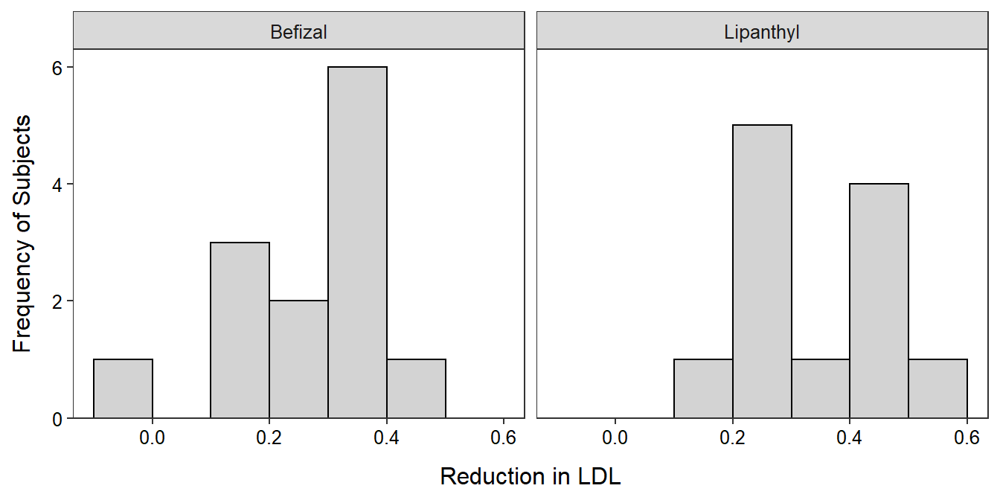

Low density lipoprotein (LDL) is often called “bad cholesterol” because they can cause lipids to be deposited in artery walls, thus causing arteries to become blocked. Levels of LDL may be lowered with lifestyle changes and pharmaceuticals. Researchers conducted an experiment where 25 men with high cholesterol were randomly assigned one of two drugs (Befizal and Lipanthyl) designed to lower LDL levels. The results from this test are shown below.
tx n mean sd min Q1 median Q3 max
1 Befizal 13 0.278 0.134 -0.02 0.190 0.320 0.370 0.45
2 Lipanthyl 12 0.356 0.128 0.15 0.268 0.315 0.482 0.53> levenesTest(redux~tx,data=d)Levene's Test for Homogeneity of Variance (center = median)
Df F value Pr(>F)
group 1 0.0463 0.8315
23 
Determine, at the 5% level, if there is a difference in the mean decrease in LDL between the two drugs. Make sure to provide explicit answers with your work shown for all 11 steps of a hypothesis test.